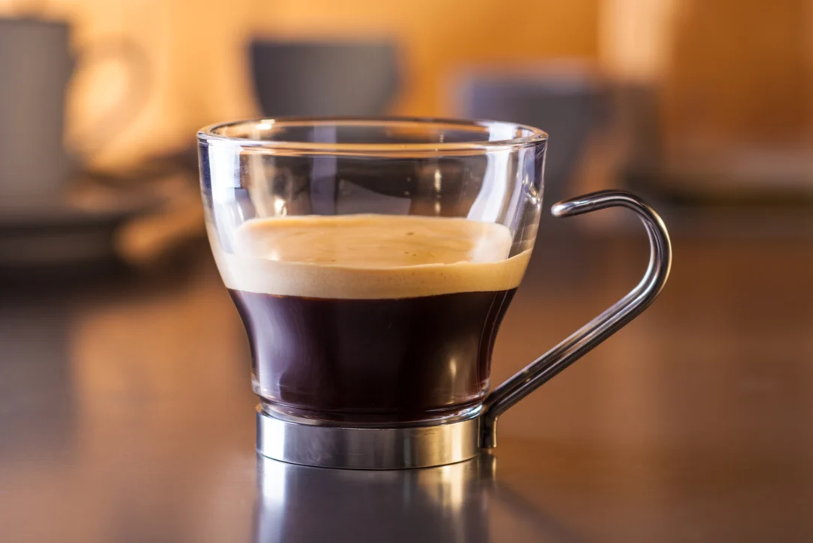

RISTRETTO
Ristretto en italiano significa “limitado o restringido”, por lo que el café ristretto no es más que un espresso corto preparado con la misma cantidad de café pero extraído con la mitad de agua. Técnicamente hablando: se extraen 15 ml de café en 15 segundos.
El auténtico caffè ristretto italiano no es mucho más que un sorbo, de ahí que la mayoría de baristas opten por servir un ristretto doble.
Un ristretto doble son 30 ml de café extraídos en 15 segundos, lo que significa que se obtiene el doble de café sin tener que prescindir de las ventajas de una extracción corta. De esta forma se consigue un café más largo y más intenso, sin perder la sedosidad y suavidad del caffè ristretto italiano original.